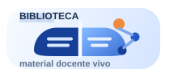

Laboratorio de diseño
Dos formas de usar la misma biblioteca
Selecciona una versión. Ambas contienen los mismos materiales y permiten realizar las mismas tareas.
Antes de empezar
Prototipos sin servidor, sin conexión a internet y sin datos de alumnado. El catálogo y el perfil docente son ficticios.
Guardar y enviar a revisión son simulaciones independientes. No se genera ningún PDF. Los cambios solo viven en memoria y se pierden al recargar o cambiar de versión.
No hay una versión recomendada ni resultados de evaluación todavía.